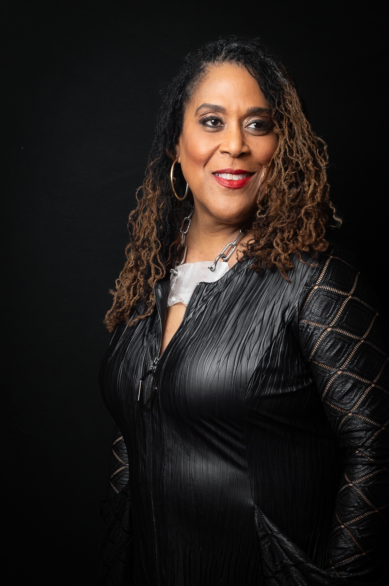
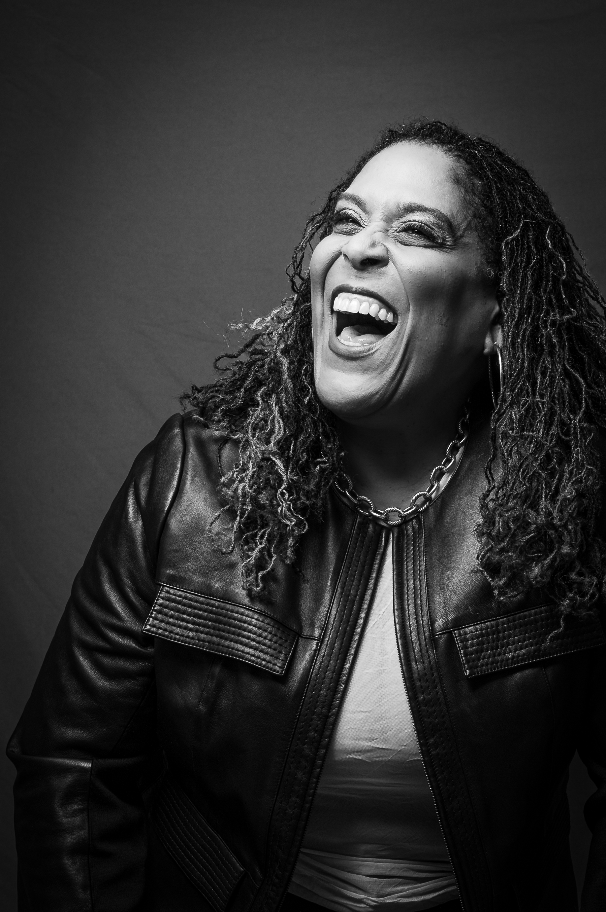

The Bet Podcast · Mood Boards v2Prepared for Rita · Bonfire Red · Apr 18 2026
What was your Bet? And the one you didn't make?
The signature question of a show about the moment in the middle — before the breakthrough, before the polished story, when the outcome isn't guaranteed and every path still feels possible.
V2 · built on the Apr 15 Creative Exploration + the Brand Platform Discovery Questionnaire.
The Bet
Hosted by Rita McNeil Danish. Next: pick a direction for the Apr 24 logo review.
Who The Bet is
The most interesting person at the dinner party — not because she's loudest, but because she asks the question nobody else dares to.
Rita is a recovering attorney, a former judge, a law-firm partner, a CEO, an entrepreneur, a mentor. Three decades of bets — taken, refused, almost-taken. The Bet is the show she was always going to make. It has a specific voice (direct, warm, disarmingly honest — like a trusted best friend) and a specific territory (the middle). Every choice in these boards tries to protect both.
Mission
Give voice to the moment in the middle. Honest, unscripted conversations about risk, doubt, and the decisions we make when the outcome isn't guaranteed.
— from the Bonfire Red questionnaire, Phase 01.
Vision
Multi-platform media brand — podcast, book, live events, community — built on stories of ambition, reinvention, and the human side of the choices that change everything.
Fast Company 2035 headline: "How Rita McNeil Danish built a media empire by asking the question nobody else was asking."
Audience · The Hero
Women navigating career invention, reinvention, leadership decisions, life pivots. Ambitious professionals → seasoned executives. Plus founders, nonprofit leaders, anyone who has had to bet on themselves.
Pain point: the fear just before the Bet. They want the real version — the doubt, the fear, what it actually felt like. Not the polished post-mortem.
Archetype blend
70% Hero + Explorer — ambitious, rising to the challenge, pushing into territory nobody talks about. 30% Sage — hard-won wisdom, three decades of credentials earned.
A working name for Rita's hybrid: The Honest Guide. She's been where you're standing. She won't lecture you.
Voice & tone
Direct. Relatable. Warm. Disarmingly honest. The way a trusted friend talks at the kitchen table, not the way a coach talks from a stage.
The Bet goes where the others don't — the moment of doubt, the personal bet, the marriage, the friendship, the quiet decision nobody narrates.
Rita's own story gives her access to emotional territory a produced network show cannot replicate. That's the wedge.
Board 01
The Edge
How it feels
The body knows before the mind catches up. The Edge is the direction that lives inside the chest-tightening half-second before a decision — when fear and readiness are the same feeling and you're briefly, completely alone with the truest version of yourself. Warm, not cold. Film-still quiet. Rita in silhouette, in shadow, in flashes of ember light. The brand as a held breath.
You already know this feeling — your body has been here before your mind caught up.
— concept #03 · the edge · Apr 15 exploration
cinematicquietgrainedamber · ember · bonebreath-heldbody-firsthero + sage
Palette — warm ember on deep ground
Char#0F0A06
Smoke#1A1208
Ember#C2571D
Copper#8F4418
Heart Red#7A1A1A
Bone#E0CFA9
Typography — serif that has lived a life, mono that keeps score
Display · Fraunces Light / Italic
The half-second before.
Fraunces at light weights — thin strokes, tall italic. Feels like a vintage book cover set in a dim room.
Body · Inter · Accent · DM Mono
Fear and readiness are the same feeling. Rita sits down with the people who felt it anyway, and asks them what they almost didn't say.
EP. 07 · THE NIGHT I QUIT THE FIRM
Inter for listening-length body. DM Mono for labels, ep numbers, timestamps.
Signature question · Edge treatment
What was your Bet? And what was the Bet you didn't make?
Imagery — six ways to shoot one held moment
Host · hand to chin · low shutter · B&W
Rooftop at blue hour · backlit figure · no face · city below

Leather & red lip · 85mm · tungsten key
Blinds at 4am · thin amber light bars · the bedroom ceiling
A cup of coffee going cold · film still · the decision already made
Genuine laugh · warm color · the other side of the Edge — relief
Her back · shot over the shoulder · about to walk into the room
Materials — surfaces that have held heat
Pleated black leather
Burnished copper
Bone paper · deckle edge
35mm grain · push-processed
Wardrobe & shot language
Rita wears: black leather, pleated dress, red lip, statement silver, chunky clear cuff. Shot on: dark seamless backdrop, single tungsten key, 85mm, slight negative fill. Grain dialed in. Both B&W and color. No retouching beyond skin-true.
Deliverables — cover, episode, social
The Bet · S1
The half second before.
Honest, unscripted conversations about the moment in the middle. Hosted by Rita McNeil Danish.

EP. 12
The exit wound.
Lia P. — the partnership she walked away from on a Tuesday.
Pull quote · Ep. 03
"I didn't know if I was brave or stupid. I still don't."
— Marcus K. · attorney → chef · bet 2019
Voice samples — copy in the Edge register
Episode description
Before Lia walked into her partner's office on a Tuesday afternoon, she'd been rehearsing the sentence for three years. In this episode: the sentence, the silence after, and the Bet she almost didn't make. Warning: honest.
Social caption
The Bet isn't the leap. It isn't the landing. It's the half-second you don't tell anyone about — the one where your body knows before your mind does. This week: Marcus K.
Keynote bio opener
Rita McNeil Danish has been a judge, a partner, a CEO, and — by her own count — a reinventor five times over. She made every Bet and missed two. She'll tell you which ones, and why.
Feels like
A Maggie Nelson essay. The Alison Bechdel chapter about her father. A Kendrick album side-2. The first ten minutes of Marriage Story. Rita, at midnight, at a kitchen island.
Everyone is holding something. A decision they haven't announced. A risk they haven't named. A version of themselves they haven't shown anyone yet. The Hand is the direction that centers the show's actual mechanic — Rita's signature question — and treats every conversation as a moment of revealing. Brass, parchment, cognac, oxblood. Hands in every frame.
Everyone is holding something. And in the space between one person asking and another answering — the cards finally show.
Bold serif + single italic "the" in brass. Feels like a letterpressed invitation.
Body · Fraunces Regular · DM Mono accents
The story not yet told. The pull between what guests carry privately and what they finally say out loud.
BET #14 · SHOWN · APRIL 2026
Episode numbering styled like bet totals. Each episode: a card laid down.
Signature question · Hand treatment
What was your Bet? And what was the one you've been holding?
Imagery — the ritual of revealing
Host · hands in frame · the asking pose
Single parchment card · face-down on dark felt · window light
Guest's "bet card" · hand-typed · signed at the bottom
Velvet · side profile · held in
Brass reading lamp · edge of a wooden table · two cups · no one at the table yet
Zip · ring · the guarded shot
Top-down · closed fist · what's inside
Materials — surfaces that hide and reveal
Aged parchment
Brushed brass
Bookcloth oxblood
Stained walnut
Wardrobe & shot language
Rita wears: warm velvet (bronze, oxblood), soft leather jacket, crystal or brass pendant, red lip. Shot on: felted wood table, practical brass lamp as key, hands in every frame, shallow DOF. Think Vanity Fair interview still, not studio glam.
Deliverables — cover, episode, social
The Bet
Show the card.
Every guest is holding something. This show is where they finally show it.
BET #04 · SHOWN
The raise.
Tanya Ofori — the ask that rewrote the rest of her career.
Pull quote · Ep. 09
"I'd been holding that answer for six years."
— Julian M. · teacher → founder
Voice samples — copy in the Hand register
Episode description
Tanya Ofori had the number in her head for six weeks before she wrote it down. Six months before she said it out loud. In this episode, she finally shows the card — and tells Rita what almost stopped her.
Social caption
Every guest on The Bet walks in holding something. A number. A sentence. A decision they haven't announced. The Hand is the moment they show it. This week: Tanya.
Website hero
What was your Bet? And what was the one you've been holding? A podcast, hosted by Rita McNeil Danish, for anyone who has ever had to bet on themselves — especially when no one else would.
Feels like
A private dinner with five chairs. A letter you've kept in the drawer. Vanity Fair at its most interior. A Moth story told to one person. The night before you tell anyone.
Doesn't feel like
Casino clichés (dice, roulette, "Vegas"), poker-bro cigar aesthetic, anything that makes the metaphor feel like a gimmick instead of a frame for the real work.
Board 03
The Crossroads
Where the audience lives
The biggest territory. The direction that builds the multi-platform brand — podcast to book to live events to community. Crossroads is warm, daylit, lived-in. It doesn't perform for you; it pulls up a chair. This is the board that most looks like a show your best friend recommends and your mother actually listens to. The direction that scales.
Every direction is possible. None of them are certain. That's where the show lives.
— concept #01 · crossroads · Apr 15 exploration
warmdaylitgenerousterracotta · ochre · dusktypography-ledscalablehero + explorer
Palette — morning light, earth, open sky
Linen#F1E7D2
Ochre#D09235
Terracotta#B0532A
Dusk Earth#7A5A3C
Atlas Blue#3D4B60
Ink#1A1510
Typography — bookshop classic, talk-show warmth
Display · Fraunces Regular Italic
The road you didn't take.
Italic as the house voice. Feels like a well-loved paperback you'd want on your shelf.
Body · Space Grotesk · Fraunces italic for feeling
Standing in the middle of something — a career, a marriage, a version of yourself that no longer fits. The Bet meets you there.
Episode no. 12 · "the exit ramp"
Modern grotesk for clarity. Italic serif pull-quotes for warmth.
Signature question · Crossroads treatment
What was your Bet? And what was the road you didn't take?
Imagery — thresholds, roads, rooms before you leave them
Rita laughing · unguarded · the best friend at the table
Hand-painted wooden signpost · three arms · serif caps
Standing · full figure · ready
An open doorway · warm interior · cool hallway beyond
Seated · mid-laugh · hands talking
Diner booth, 3pm · coffee cup, half-drunk · someone just left or is arriving
Materials — paper, cloth, warm sun
Woven linen
Hand-dyed ochre
Terracotta · clay brick
Dusk sky · 7:42 pm
Wardrobe & shot language
Rita wears: rich earth tones — bronze velvet, warm knit, cream lace — less leather, more texture. Shot on: natural light or soft overhead, kitchen counters, reading chairs, outside at golden hour. The brand that looks good on a book jacket and a festival stage.
Deliverables — cover, episode, social
The Bet Podcast
The road you didn't take.
Season 1 · hosted by Rita McNeil Danish.
Episode 12
The exit ramp.
Alana Reyes on walking away at the top.
Pull quote · Rita
"There's no one right road. There's just the one you take."
— Rita McNeil Danish, host
Voice samples — copy in the Crossroads register
Episode description
Alana Reyes made partner at 34. At 41, she walked away from it. In this episode: the seven years in between, the conversation at the kitchen table, and the Bet she almost didn't make. Hosted by Rita McNeil Danish.
Social caption
The middle of your life is not a waiting room. It's the whole room. The Bet sits down with the people who chose — and the ones who didn't, and kept going anyway. New episode every Thursday.
Website hero
An honest conversation about the bets we make, the ones we don't, and the middle nobody talks about. Hosted by Rita McNeil Danish — recovering attorney, reinventor, best friend you never had.
Feels like
A Cheryl Strayed column. Brené on a Sunday. On Being. A Penguin Classics jacket. The kind of show your mother recommends to her book club.
Doesn't feel like
Overused self-help aesthetics. Pastel Pinterest gradients. Cursive logo scripts. Anything that softens the show into a wellness brand.
What to bring to the Apr 24 logo review
Three doors. Same truth.
These aren't mutually exclusive. The winning direction almost always borrows. A gut read:
01 · The Edge
Pick this if the brand should feel like a film — and if you're willing to protect the mood even when it makes the marketing harder.
Best for: the launch trailer, the press push, the series art. The risk: too heavy for merch, newsletter, 15-second clips.
02 · The Hand
Pick this if you want the signature question to be the whole brand — and if every episode is a ritual, not a news cycle.
Best for: the show's identity system, the book, live events. The risk: the metaphor gets loud if it's over-used.
03 · Crossroads
Pick this if the brand should scale — podcast to book to community — and if warmth is the differentiator.
Best for: the website, email, merch, the book jacket, keynote tour. The risk: warmth without edge reads as lifestyle.
Joey's honest take
A hybrid is probably the answer. Crossroads as the system — because Rita's voice is warm and her ambition is multi-platform — with Edge pulled forward for launch/series art and Hand embedded as the signature question device. That keeps the warmth and the edge. It also gives the logo work something specific to solve: a mark that carries a quiet question inside it.